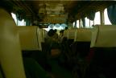
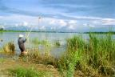
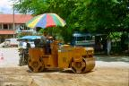

|
On avait vu en Thaïlande un instrument servant à concasser le grain, dans un musée. On a vu au Laos un gamin l'utiliser au bord d'un champ... Il paraît que le Laos ressemle à la Thaïlande d'il y a trente ans, on n'a pas de mal à le croire.
Le pays est très peu peuplé. A peine 6 millions d'habitants pour une surface seulement deux fois plus petite que la France. Il est recouvert de forêts, 85% des sols, et le reste est très agricole. Vientiane, la capitale, a des allures de gros village et redevient village qu'on on s'éloigne un peu du centre. Peu de béton, beaucoup de maisons en bois, des routes et des ponts en construction partout à travers le pays
Le nord de Vientiane, assez touristique, est majestueusement recouvert de montagnes qui croûlent sous la végétation. Le sud, plus plat, est encore plus authentique, avec les 4000 îles au milieu du Mékong et les caféiers de Bolaven
Et partout, le Mékong! Rouge au milieu de toute cette verdure, il s'écoule tranquillement mais avec force, comme la vie ici, la vie à la campagne.
Voir le trajet en détail (étapes, durée, coût)
| Paksé |
|
|
Samedi 2 juin -
Après quelques rapides formalités (5 minutes, on a même faiili passer sans
se faire tamponner la sortie de Thaïlande ni l'entrée au Laos tant c'était bien
indiqué et que tout le monde semblait s'en fiche royalement), nous voilà au
Laos avec un visa de trente jours. Depuis le temps qu'on le regardait depuis
l'autre côté du Mékong!
Lire la suite ...
|
| Si Phan Don |
|
|
Lundi 4 juin -
Heureusement que le brave Monsieur Pon -qui tient un restaurant du même nom
juste à côté de notre hôtel, le seul restaurant où l'on peut conseiller d'aller
manger d'ailleurs... je n'ai jamais rien vu quelque chose ressembler moins à
du poulet que ce qu'il sevent dans leur riz au poulet dans l'infâme restau juste
à côté de celui de ce brave Monsieru Pon...
Lire la suite ...
|
| Paksong |
|
|
Mardi 5 juin -
A COMPLETER
L’après-midi, on prend un pick-up pour aller de Paksé à Paksong tout en se
disant qu’ils pourraient être un peu plus créatifs au niveau des noms des villes
et villages. Paksong à une cinquantaine de kilomètres à l’est de Paksé et plus
au nord Pakxan, Don Khong juste à côté de Don Khon et Sepon dans le même coin
que Sekong...
Lire la suite ...
|
| Savannakhet |
|

|
Mercredi 6 juin -
Le son de la pluie battante nous cloue au lit. Tant pis pour le bus de 7h00!
Lire la suite ...
|
| Vientiane |
|

|
Jeudi 7 juin -
Lever 5h00. Le bus est sensé partir à 6h00 pour un trajet de 7 à 10 heures
selon les sources.
Lire la suite ...
|
| Vang Vieng |
|
|
Samedi 9 juin -
On se paie un petit luxe ce matin. On a réservé deux billets d’avion Vientiane-Hanoi.
Lire la suite ...
|
| Luang Prabang |
|
|
Lundi 11 juin -
En route pour Luang Prabang! On n'avait pas vu cela depuis le Népal quand on
avait pris un tour organisé pour Chittwan: pas un seul autochtone dans le bus!!!
Lire la suite ...
|
| Retour à Vientiane |
|

|
Jeudi 14 juin -
Journée transports dans les montagnes magnifiques, tantôt couvertes de forêts,
tantôt de cultures sur brûlis. Chaque nouveau virage provique l'émerveillement.
Lire la suite ...
|
La suite du voyage : Le Vietnam
|